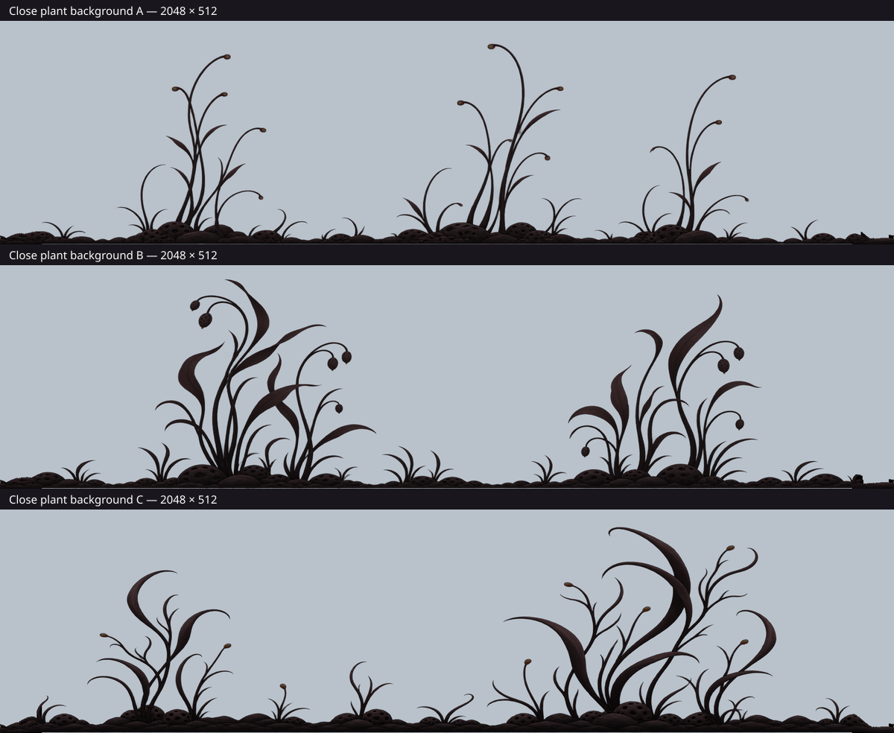

Thin, tall Cinderheart background plants
Three shaded charcoal/burgundy strips with wiry stalks, curling fronds, seed pods and subdued copper tips. A → B → C → A forms a continuous loop.
Plants 0.7× · rocks 0.75× · terrain 1.0× · nearest foreground 1.2×. Terrain is held fixed to demonstrate relative movement. Adjust the plant baseline to expose more or less of the stems behind your floor.
Three variations · transparency overview
